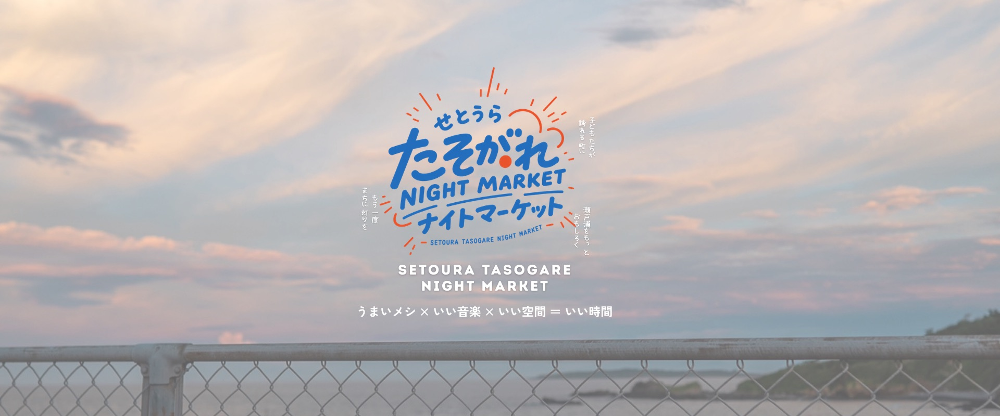

SETOURA TASOGARE NIGHT MARKET
参加者アンケート
本日はご参加いただきありがとうございます。今後のイベントづくりと事業報告の参考にさせてください。
回答の目安は3〜5分です
回答内容はイベント改善および補助金事業の報告目的で使用します。個人が特定される形で公開することはありません。

SETOURA TASOGARE NIGHT MARKET
回答内容はイベント改善および補助金事業の報告目的で使用します。個人が特定される形で公開することはありません。